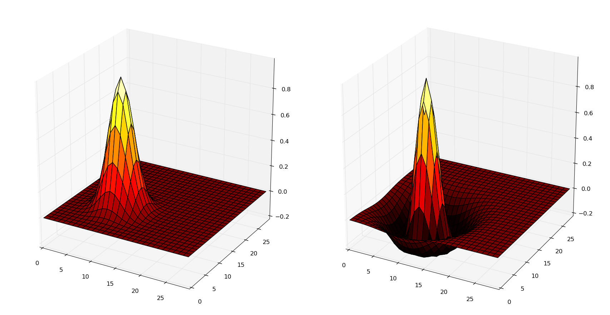

Connectors
There are basically four methods to instantiate projections:
- By using a built-in connector method.
- By using a saved projection.
- By loading dense or sparse matrices from numpy or scipy.
- By defining a custom connector method.
Built-in connectors
Connectors are methods of Projection that allow to instantiate the underlying data structures like the connectivity matrix and other local attributes. However, this only happens after the network is compiled.
Connector methods take the form:
proj.xxx(weights, delays, *other_parameters)The weights argument defines the initial value taken by the weight wof the projection. You can provide either:
- a single value (
weights=1.0) which will be the same for all synapses. - a random distribution instance (RandomDistribution) allowing to sample values for each synapse.
It is not possible to provide a list of weights, as the underling synapses are not created yet and might be random.
The delays argument controls the delays in synaptic transmission. By default it is 0 (or dt), meaning that transmitting information through a synapse takes one simulation step. You canalso provide either:
- a single value (
delays=5.0), meaning that all synapses will have the same constant delay (called uniform delays). - a random distribution instance, providing a unique random delay for each synapse (called non-uniform delays).
all_to_all (dense)
In a all-to-all pattern (also called dense or fully-connected), all neurons of the post-synaptic population form connections with all neurons of the pre-synaptic population.
proj.all_to_all(weights=ann.Uniform(0.0, 0.5)) When the projection is between a projection and itself (recurrent), self-connections (a single neuron to itself) are avoided by default (the diagonal of the connectivity matrix is removed), but the parameter allow_self_connections can be set to True:
proj.all_to_all(weights=1.0, delays=2.0, allow_self_connections=False) If you provide a single initial weight value and the synapse has no plasticity (the weight w will never be modified), the projection will not store one value of w per synapse, but one per projection. This allows to save a lot of memory space for this kind of static projections. If you do not want this, you can disable it with:
proj.all_to_all(weights=1.0, force_multiple_weights=True) fixed_probability (sparse)
For each post-synaptic neuron, there is a fixed probability that it forms a connection with a neuron of the pre-synaptic population. It is basically am all_to_all projection, except some synapses are not created, making the projection sparse:
proj.fixed_probability(probability = 0.2, weights=1.0) allow_self_connections and force_multiple_weights can also be set.
one_to_one (diagonal)
A neuron of the post-synaptic population forms a connection with only one neuron of the pre-synaptic population. The order depends on the ranks: neuron 0 is connected with neuron 0 and so on. It is advised that the pre- and post-populations have the same size/geometry, especially when using population views.
pop1 = net.create((20, 20), Neuron(parameters="r=0.0"))
pop2 = net.create((10, 10), Neuron(equations="r=sum(exc)"))
proj = net.connect(pop1[5:15, 5:15], pop2, 'exc')
proj.one_to_one(weights=1.0) Self-connections cannot be created. force_multiple_weights can be set to True.
fixed_number_pre
Each neuron in the post-synaptic population receives connections from a fixed number of neurons of the pre-synaptic population chosen randomly. It may happen that two post-synaptic neurons are connected to the same pre-synaptic neuron and that some pre-synaptic neurons are connected to nothing:
proj.fixed_number_pre(number = 20, weights=1.0) fixed_number_post
Each neuron in the pre-synaptic population sends a connection to a fixed number of neurons of the post-synaptic population chosen randomly. It may happen that two pre-synaptic neurons are connected to the same post-synaptic neuron and that some post-synaptic neurons receive no connection at all:
proj.fixed_number_post(number = 20, weights=1.0) The following figure shows the fixed_number_pre (left) and fixed_number_post projections between two populations of 4 neurons, with number=2. In fixed_number_pre, each post-synaptic neuron receives exactly 2 connections, while in fixed_number_post, each pre-synaptic neuron send exactly two connections:

gaussian
A neuron of the post-synaptic population forms a connection with a limited region of the pre-synaptic population, centered around the neuron with the same normalized position. Weight values are initialized using a Gaussian function, with a maximal value amp for the neuron of same position and decreasing with distance (standard deviation sigma):
w(x, y) = A \, \exp(-\dfrac{1}{2}\dfrac{(x-x_c)^2+(y-y_c)^2}{\sigma^2})
where (x, y) is the position of the pre-synaptic neuron (normalized to [0, 1]^d) and (x_c, y_c) is the position of the post-synaptic neuron (normalized to [0, 1]^d). A = amp, sigma = \sigma.
In order to void creating useless synapses, the parameter limit can be set to restrict the creation of synapses to the cases where the value of the weight would be superior to limit*abs(amp). Default is 0.01 (1%).
Self-connections are avoided by default (parameter allow_self_connections).
The two populations must have the same number of dimensions, but the number of neurons can vary as the positions of each neuron are normalized in [0, 1]^d:
proj.gaussian( amp=1.0, sigma=0.2, limit=0.001) dog
The same as gaussian, except weight values are computed using a Difference-of-Gaussians (DoG), usually positive in the center, negative a bit further away and small at long distances.
\begin{aligned} w(x, y) &= A^+ \, \exp(-\frac{1}{2}\frac{(x-x_c)^2+(y-y_c)^2}{\sigma_+^2}) \\ &- A^- \, \exp(-\frac{1}{2}\frac{(x-x_c)^2+(y-y_c)^2}{\sigma_-^2}) \\ \end{aligned}
Weights smaller than limit * abs(amp_pos - amp_neg) are not created and self-connections are avoided by default (parameter allow_self_connections):
proj.dog(
amp_pos=1.0, sigma_pos=0.2,
amp_neg=0.3, sigma_neg=0.7,
limit=0.001
) The following figure shows the example of a neuron of coordinates (10, 10) in the post-synaptic population, which is connected through the gaussian (left) and dog (right) projections to a population of geometry 30*30. The X and Y axis denote the coordinates of the pre-synaptic neurons, while the Z axis is the weight value.

If a single value is used for the weights argument of all_to_all, one_to_one, fixed_probability, fixed_number_pre and fixed_number_post, and the default synapse is used (no synaptic plasticity), ANNarchy will generate a single weight value for all the synapses of the projection, not one per synapse.
This allows to save a lot of memory and improve performance. However, if you wish to manually change the weights of some of the synapses after the creation, you need to force the creation of one value per synapse by setting force_multiple_weights=True in the call to the connector.
Saved connectivity
It is also possible to build a connection pattern using data saved during a precedent simulation. This is useful when:
- pre-learning is done in another context;
- a connector method for static synapses is particularly slow (e.g. DoG), but loading the result from a file is faster.
The connectivity of a projection can be saved (after compile()) using:
proj.save_connectivity(filename='proj.npz')The filename can used relative or absolute paths. The data is saved in a binary format:
- Compressed Numpy format when the filename ends with
.npz. - Compressed binary file format when the filename ends with
.gz. - Binary file format otherwise.
It can then be used to instantiate another projection:
proj.from_file(filename='proj.npz')Only the connectivity (which neurons are connected), the weights and delays are loaded. Other synaptic variables are left untouched. The pre- and post-synaptic population must have the same size during saving and loading.
From connectivity matrices
One can also create connections using Numpy dense matrices or Scipy sparse matrices.
from_matrix
This method accepts a Numpy array to define the weights of the projection (and optionally the delays). By default, the matrix should have the size (post.size, pre.size), so that the first index represents a post-synaptic neuron and the second the pre-synaptic neurons. If your matrix is defined in the reversed order, you can either transpose it or set the pre_post argument to True.
This method is useful for dense connectivity matrices (all-to-all). If you do not want to create some synapses, the weight value should be set to None.
The following code creates a synfire chain inside a population of 100 neurons:
N = 100
net = ann.Network()
pop = net.create(N, Neuron(equations="r=sum(exc)"))
proj = net.connect(pop, pop, 'exc')
# Initialize an empty connectivity matrix
w = np.array([[None]*N]*N)
# Connect each post-synaptic neuron to its predecessor
for i in range(N):
w[i, (i-1)%N] = 1.0
# Create the connections
proj.from_matrix(w)Connectivity matrices can not work with multi-dimensional coordinates, only ranks are used. Population views can be used in the projection, but the connection matrix must have the corresponding size:
proj = net.connect(pop[10:20], pop[50:60], 'exc')
# Create the connectivity matrix
w = np.ones((10, 10))
# Create the connections
proj.from_matrix(w)from_sparse
For sparse connection matrices, the Numpy array format may have a huge memory overhead if most of its values are None. It is possible to use Scipy sparse matrices in that case. The previous synfire chain example becomes:
from scipy.sparse import lil_matrix
proj = net.connect(pop, pop, 'exc')
w = lil_matrix((N, N))
for i in range(N):
w[i, (i+1)%N] = 1.0
proj.from_sparse(w)Contrary to from_matrix(), the first index of the sparse matrix represents the pre-synaptic neurons, not the post-synaptic ones. This is for compatibility with other neural simulators.
from_sparse() accepts lil_matrix, csr_matrix and csc_matrix objects, although lil_matrix should be preferred for its simplicity of element access.
User-defined patterns
This section describes the creation of user-specific connection patterns in ANNarchy, if the available patterns are not enough. A connection pattern is simply implemented as a method returning a LILConnectivity (list-of-list) object containing all the necessary information to create the synapses.
A connector method must take on the first position the pre-synaptic population (or a subset of it) and on the second one the post-synaptic population. Other arguments are free, but should be passed when creating the projection.
probabilistic_pattern(pre, post, dt, <other arguments>)As an example, we will recreate the fixed_probability connector method, building synapses with a given probability. For this new pattern we need a weight value (common for all synapses) and a probability value as additional arguments. We consider that no delay is introduced in the synaptic transmission.
def probabilistic_pattern(pre, post, dt, weight, probability):
synapses = ann.LILConnectivity(dt=dt)
... pattern code comes here ...
return synapsesfixed_probability in Python
The connector method needs to return a LILConnectivity object storing the connectivity. For each post-synaptic neuron receiving synapses, a list of pre-synaptic ranks, weight values and delays must be added to the structure. If you use 2D or 3D populations you need to transform the coordinates into ranks with the rank_from_coordinates function.
import random
import ANNarchy as ann
def probabilistic_pattern(pre, post, dt, weight, probability):
# Create a LIL structure for the connectivity matrix
synapses = ann.LILConnectivity(dt=dt)
# For all neurons in the post-synaptic population
for post_rank in range(post.size):
# Decide which pre-synaptic neurons should form synapses
ranks = []
for pre_rank in range(pre.size):
if random.random() < probability:
ranks.append(pre_rank)
# Create weights and delays arrays of the same size
values = [weight for i in range(len(ranks)) ]
delays = [0 for i in range(len(ranks)) ]
# Add this information to the LIL matrix
synapses.add(post_rank, ranks, values, delays)
return synapsesThe first for - loop iterates over all post-synaptic neurons in the projection. The inner for loop decides for each of these neurons if a synapse with a pre-synaptic neuron should be created, based on the value probability provided as argument to the function.
The lists values and delays are then created with the same size as ranks (important!), and filled with the desired value. All this information is then fed into the LIL matrix using the add(post_rank, ranks, values, delays) method.
Building such connectivity matrices in Python can be extremely slow, as Python is not made for tight nested loops. If the construction of your network lasts too long, you should definitely write this function in Cython.
The add() should be only called once per post-synaptic neuron! If not, ANNarchy will have to reorder its internal representations and this will be really slow.
Usage of the pattern
To use the pattern within a projection you provide the pattern method to the from_function method of Projection:
proj = net.connect(
pre = pop1,
post = pop2,
target = 'inh'
)
proj.from_function(
method=probabilistic_pattern,
weight=1.0,
probability=0.3
)method is the method you just wrote. Extra arguments (other than pre and post) should be passed with the same name.
fixed_probability in Cython
For this example, we will create a Cython file CustomPatterns.pyx in the same directory as the script. Its content should be relatively similar to the Python version, except some type definitions:
# distutils: language = c++
import random
import ANNarchy
cimport ANNarchy.cython_ext.Connector as Connector
def probabilistic_pattern(pre, post, dt, weight, probability):
# Typedefs
cdef Connector.LILConnectivity synapses
cdef int post_rank, pre_rank
cdef list ranks, values, delays
# Create a LILConnectivity structure for the connectivity matrix
synapses = Connector.LILConnectivity(dt=dt)
# For all neurons in the post-synaptic population
for post_rank in range(post.size):
# Decide which pre-synaptic neurons should form synapses
ranks = []
for pre_rank in range(pre.size):
if random.random() < probability:
ranks.append(pre_rank)
# Create weights and delays arrays of the same size
values = [weight for i in range(len(ranks)) ]
delays = [0 for i in range(len(ranks)) ]
# Add this information to the LILConnectivity matrix
synapses.add(post_rank, ranks, values, delays)
return synapsesThe only differences with the Python code are:
- The module
Connectorwhere theLILConnectivityconnection matrix class is defined should be cimported with:
cimport ANNarchy.cython_ext.Connector as Connector- Data structures should be declared with
cdefat the beginning of the method:
# Typedefs
cdef Connector.LILConnectivity synapses
cdef int post_rank, pre_rank
cdef list ranks, values, delays To allow Cython to compile this file, we also need to provide with a kind of "Makefile" specifying that the code should be generated in C++, not C. This file should have the same name as the Cython file but end with .pyxbld, here : CustomPatterns.pyxbld.
from distutils.extension import Extension
import ANNarchy
def make_ext(modname, pyxfilename):
return Extension(name=modname,
sources=[pyxfilename],
include_dirs = ANNarchy.include_path(),
extra_compile_args=['-std=c++11'],
language="c++")This .pyxbld is generic, you don’t need to modify anything, except its name.
Now you can import the method probabilistic_pattern() into your Python code using the pyximport module of Cython and build the Projection normally:
import pyximport; pyximport.install()
from CustomPatterns import probabilistic_pattern
proj.from_function(method=probabilistic_pattern, weight=1.0, probability=0.3)Writing the connector in Cython can bring speedups up to 100x compared to Python if the projection has a lot of synapses.